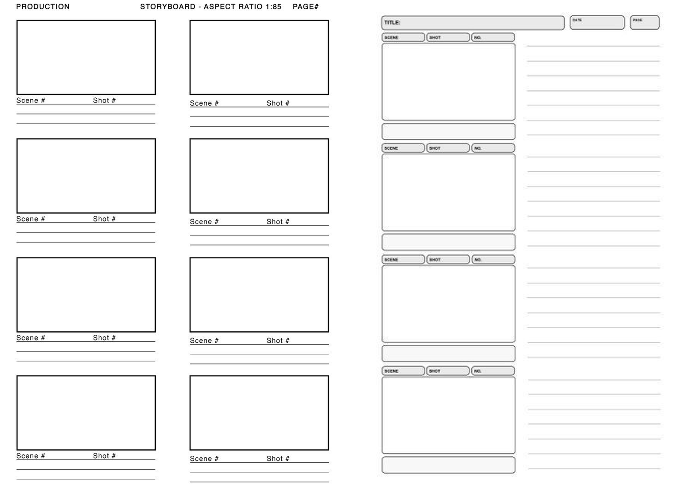
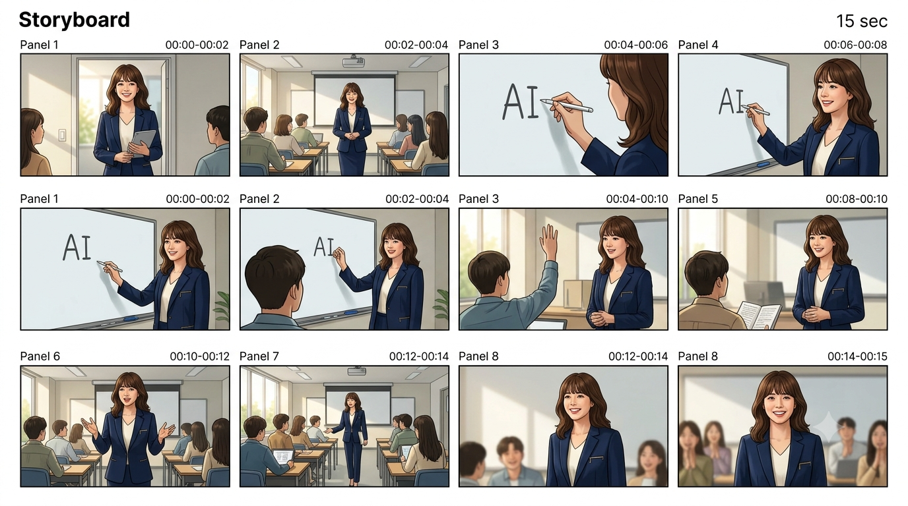

4. 스토리보드 작성 방법
아이디어를 영상으로 시각화하고 협업을 효율화하는스토리보드(콘티)의 필수 구성 요소입니다.
스토리보드 작성 시 필수 4대 구성 요소
- Scene No. & Cut No. (장면 및 컷 번호): 영상 편집 순서를 정하는 기본 식별 코드입니다.
- Visual Sketch (비주얼 스케치): 해당 컷에 보여질 대략적인 구도, 인물 배치 및 시각 연출을 그림이나 텍스트로 묘사합니다.
- Audio & Dialogue (오디오 및 대사/내레이션): BGM 사운드 종류, 자막에 들어갈 텍스트 내용을 정의합니다.
- Action & Camera Motion (동작 및 연출): 피사체의 행동 방향, 카메라 무빙, 전환 시간(Duration)을 명시합니다.
스토리보드 작성 실제 가이드 예시

클릭하여 크게 보기
4. 스토리보드 작성 방법
스토리보드 제작을 도와주는 도구 리스트와 실무형 간이 콘티 양식 미리보기입니다.
스토리보드 추천 도구 및 링크

클릭하여 크게 보기
스토리보드 양식 미리보기
| 씬 번호 | 화면 연출 (Visual) | 자막 & 사운드 (Audio) |
|---|---|---|
| #01 | 브랜드 로고가 중앙에 부드럽게 나타남 | 웅장한 BGM 서서히 인트로 |
| #02 | 인물이 스마트폰 화면을 두드리는 타이트 샷 | (내레이션) "아직도 복잡하게 편집하시나요?" |
| #03 | CapCut의 다양한 기능들이 지나감 (고속 재생) | (자막) AI 자막 생성! 3초면 끝! |
작성 팁: 마케팅 숏폼(15초~60초)은 보통 5개~10개의 씬으로 구성됩니다. 각 씬의 화면 전환 시간(Duration)은 3초 내외가 시청 지속시간 확보에 가장 좋습니다.